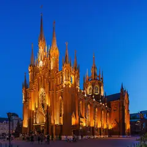
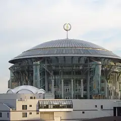
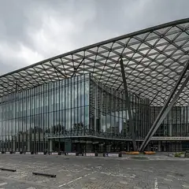

Подборку собрали 3 ноября, прошедшие события скрыты. Свежая афиша — на главной
Афиша · обновлено 3 ноября
Концерты в Москве
90 концертов с 3 ноября по 27 марта 2027. Билеты — от 500 ₽. Даты и цены сверяем с официальными страницами, ссылки на кассы — в карточках. Позови на концерт игрой или собери компанию голосованием.
- 90 концертов
- от 500 ₽
Концерты 40 из 90
Atmosphere · м. Москва-Сити · 3 500–11 500 ₽ · 16+
Большой сольник Ёлки часа на три: «Прованс», другие хиты и новые песни, много разговоров с залом. Вечер накануне выходного 4 ноября — повод выбраться вдвоём.
Подробнее: ЁлкаПозвать сюда: ЁлкаБилеты : Ёлка (страница с билетами, откроется в новой вкладке)
ЦСКА Арена · м. ЗИЛ · от 1 700 ₽ · 16+
Большой сольник Pyrokinesis накануне выходного 4 ноября: мрачная лирика, гитары и зал, который поёт хором.
Подробнее: PyrokinesisПозвать сюда: PyrokinesisБилеты : Pyrokinesis (страница с билетами, откроется в новой вкладке)
Театр Российской армии, Большая сцена · м. Достоевская · 5 000–44 000 ₽ · 6+
Юбилейная серия сольных концертов: знаменитые песни, новые вещи и разговор с залом о жизни. Вечеров много — до 8 ноября, можно выбрать удобный.
Подробнее: Александр РозенбаумПозвать сюда: Александр РозенбаумБилеты : Александр Розенбаум (страница с билетами, откроется в новой вкладке)
Live Арена · Сколково (МЦД-1) · от 3 500 ₽ · 6+
Пелагея в праздничный вечер 4 ноября: фолк, живой сильный голос и спокойная атмосфера. Хороший концерт для двоих.
Подробнее: ПелагеяПозвать сюда: ПелагеяБилеты : Пелагея (страница с билетами, откроется в новой вкладке)
VK Stadium · м. Сокол · от 3 800 ₽ · 6+
Новая программа NILETTO «360°»: танцевальные хиты, которые подпевает весь зал. Лёгкий вариант на праздничный вечер.
Подробнее: Niletto. Программа 360°Позвать сюда: Niletto. Программа 360°Билеты : Niletto. Программа 360° (страница с билетами, откроется в новой вкладке)

Собор Непорочного Зачатия · м. Краснопресненская · от 1 000 ₽ · 6+
Орган в четыре руки и музыка о ночи — от «Лунной сонаты» до «Маленькой ночной серенады». Вечер праздничного 4 ноября в неоготическом соборе на Пресне.
Подробнее: Музыка ночи на большом органе. Дуэт ArtbeneПозвать сюда: Музыка ночи на большом органе. Дуэт ArtbeneБилеты : Музыка ночи на большом органе. Дуэт Artbene (страница с билетами, откроется в новой вкладке)
Фото: A.Savin, Free Art License · Wikimedia Commons

Дом музыки, Зал Альфреда Шнитке · м. Павелецкая · от 1 200 ₽ · 6+
Филипп Копачевский играет Шопена: ноктюрны, мазурки и полонезы. Романтичнее фортепианную программу придумать сложно.
Подробнее: Филипп Копачевский. ШопенПозвать сюда: Филипп Копачевский. ШопенБилеты : Филипп Копачевский. Шопен (страница с билетами, откроется в новой вкладке)
Фото: Nevermind2, общественное достояние · Wikimedia Commons
TAU · м. Стахановская · от 3 500 ₽ · 16+
Глеб Викторов и «Три дня дождя» с живым гитарным звуком в клубе у Стахановской. Четверговый концерт для тех, кто знает тексты наизусть.
Подробнее: Три дня дождяПозвать сюда: Три дня дождяБилеты : Три дня дождя (страница с билетами, откроется в новой вкладке)
Дом музыки · м. Павелецкая · 1 200–2 500 ₽ · 6+
Камерный ансамбль играет собственные аранжировки песен Radiohead — не трибьют, а новое прочтение. Пятничный вечер для любителей и рока, и классики.
Подробнее: Хиты Radiohead. Simple Music EnsembleПозвать сюда: Хиты Radiohead. Simple Music EnsembleБилеты : Хиты Radiohead. Simple Music Ensemble (страница с билетами, откроется в новой вкладке)
Фото: Nevermind2, общественное достояние · Wikimedia Commons
Клуб Алексея Козлова · м. Китай-город · от 2 500 ₽ · 12+
Джаз-рок «Арсенала», который Алексей Козлов основал ещё в 1973-м, по пятницам — с Анной Королёвой на вокале и саксофоне. Ужин и живая музыка.
Подробнее: Анна Королёва и «Арсенал» Алексея КозловаПозвать сюда: Анна Королёва и «Арсенал» Алексея КозловаБилеты : Анна Королёва и «Арсенал» Алексея Козлова (страница с билетами, откроется в новой вкладке)
VK Stadium · м. Сокол · от 3 300 ₽ · 16+
Cream Soda с осенним туром: танцевальная электроника с грустинкой. Концерт в пятницу — вечер легко продолжить в баре.
Подробнее: Cream SodaПозвать сюда: Cream SodaБилеты : Cream Soda (страница с билетами, откроется в новой вкладке)
Кафедральный собор Святых Петра и Павла · м. Китай-город · 1 000–4 500 ₽ · 12+
Стеклянная арфа звучит почти неземно, а вместе с органом и сопрано — Бах, Шуберт и Чайковский. Поздний пятничный концерт при свечах.
Подробнее: Романтический вечер: звуки и свечи. Стеклянная арфа, орган, голосПозвать сюда: Романтический вечер: звуки и свечи. Стеклянная арфа, орган, голосБилеты : Романтический вечер: звуки и свечи. Стеклянная арфа, орган, голос (страница с билетами, откроется в новой вкладке)
Кафедральный собор Святых Петра и Павла · м. Китай-город · 1 000–4 500 ₽ · 12+
«Времена года» Вивальди с камерным оркестром и органный Бах днём в субботу. После концерта приятно пройтись по Ивановской горке.
Подробнее: Звуки и свечи. Времена года и органные шедеврыПозвать сюда: Звуки и свечи. Времена года и органные шедеврыБилеты : Звуки и свечи. Времена года и органные шедевры (страница с билетами, откроется в новой вкладке)
Live Арена · Сколково (МЦД-1) · от 3 000 ₽ · 6+
Шоу «Навсегда» с большой сценой и световыми эффектами: главные песни Гагариной и новые треки. Суббота вдвоём или девичьей компанией.
Подробнее: Полина Гагарина. Шоу «Навсегда»Позвать сюда: Полина Гагарина. Шоу «Навсегда»Билеты : Полина Гагарина. Шоу «Навсегда» (страница с билетами, откроется в новой вкладке)
Англиканский собор Святого Андрея · м. Охотный ряд · 2 800–3 600 ₽ · 12+
Две пианистки в четыре руки играют Циммера, Эйнауди и Рихтера, а на стенах — видеоинсталляция. Киномузыка под готическими сводами.
Подробнее: Музыка кино в четыре руки. Рихтер, Эйнауди и ЦиммерПозвать сюда: Музыка кино в четыре руки. Рихтер, Эйнауди и ЦиммерБилеты : Музыка кино в четыре руки. Рихтер, Эйнауди и Циммер (страница с билетами, откроется в новой вкладке)
Музей Николая Островского, концертный зал · м. Пушкинская · от 1 100 ₽ · 6+
Квартет «Каприччио» играет «Времена года» Вивальди целиком, при свечах, в небольшом зале на Тверской. Несколько дат на выбор.
Подробнее: Концерт при свечах. Времена года. ВивальдиПозвать сюда: Концерт при свечах. Времена года. ВивальдиБилеты : Концерт при свечах. Времена года. Вивальди (страница с билетами, откроется в новой вкладке)
Джаз-клуб Игоря Бутмана на Таганке · м. Таганская · от 2 000 ₽ · 6+
Олег Аккуратов поёт стандарты и сам аккомпанирует себе на рояле — один из самых тёплых джазовых голосов страны. Вечер за столиком, особенно хорош 28 декабря.
Подробнее: Трио Олега АккуратоваПозвать сюда: Трио Олега АккуратоваБилеты : Трио Олега Аккуратова (страница с билетами, откроется в новой вкладке)
Дом музыки, Светлановский зал · м. Павелецкая · от 2 500 ₽ · 6+
Хибла Герзмава меняет оперу на джаз и поёт стандарты с биг-бэндом Петра Востокова. Огромный Светлановский зал — повод надеть лучшее.
Подробнее: Хибла Герзмава и Большой джазовый оркестр Петра ВостоковаПозвать сюда: Хибла Герзмава и Большой джазовый оркестр Петра ВостоковаБилеты : Хибла Герзмава и Большой джазовый оркестр Петра Востокова (страница с билетами, откроется в новой вкладке)
Фото: Nevermind2, общественное достояние · Wikimedia Commons
Государственный музей А. С. Пушкина · м. Кропоткинская · 2 400–3 000 ₽ · 12+
Показывают «Огни большого города» Чаплина, а органистка играет вживую, как в первых кинотеатрах. Трогательный формат для будничного свидания.
Подробнее: Немое кино с органом: Чаплин, «Огни большого города»Позвать сюда: Немое кино с органом: Чаплин, «Огни большого города»Билеты : Немое кино с органом: Чаплин, «Огни большого города» (страница с билетами, откроется в новой вкладке)
Фото: NVO, CC BY-SA 2.5 · Wikimedia Commons
Государственный Кремлёвский дворец · м. Александровский сад · 2 500–25 000 ₽ · 12+
Большой концерт перед творческим перерывом: песни Светланы Сургановой разных лет — от ранних хитов до свежих альбомов.
Подробнее: Сурганова и ОркестрПозвать сюда: Сурганова и ОркестрБилеты : Сурганова и Оркестр (страница с билетами, откроется в новой вкладке)
Дом музыки, Зал Альфреда Шнитке · м. Павелецкая · от 1 000 ₽ · 12+
Посвящение Оскару Питерсону: трио контрабасиста Сергея Васильева и вокалистка Марина Волкова играют свинг и бибоп. Камерный пятничный джаз без больших трат.
Подробнее: Гений джаза Оскар Питерсон. Ламповый концертПозвать сюда: Гений джаза Оскар Питерсон. Ламповый концертБилеты : Гений джаза Оскар Питерсон. Ламповый концерт (страница с билетами, откроется в новой вкладке)
Фото: Nevermind2, общественное достояние · Wikimedia Commons
Государственный Кремлёвский дворец · м. Александровский сад · 1 200–9 500 ₽ · 12+
Хиты Pink Floyd с симфоническим оркестром, лазерами и видео; поёт Дурга МакБрум, бэк-вокалистка группы в турах 80–90-х. «Time», «Comfortably Numb» и другие.
Подробнее: Pink Floyd: хиты с Дургой МакБрумПозвать сюда: Pink Floyd: хиты с Дургой МакБрумБилеты : Pink Floyd: хиты с Дургой МакБрум (страница с билетами, откроется в новой вкладке)
ВТБ Арена · м. Динамо · от 2 500 ₽ · 18+
Пятничный сольник Sqwoz Bab на ВТБ Арене: вирусные треки, которые знает весь зал. Вход только с 18 лет.
Подробнее: Sqwoz BabПозвать сюда: Sqwoz BabБилеты : Sqwoz Bab (страница с билетами, откроется в новой вкладке)
Собор Непорочного Зачатия · м. Краснопресненская · от 1 000 ₽ · 6+
Поздний пятничный концерт о любви: голос, гобой и орган исполняют «Ave Maria», Пьяццоллу и Баха. Готический собор и недорогие билеты.
Подробнее: Романтический вечер. Орган, голос, гобойПозвать сюда: Романтический вечер. Орган, голос, гобойБилеты : Романтический вечер. Орган, голос, гобой (страница с билетами, откроется в новой вкладке)
Фото: A.Savin, Free Art License · Wikimedia Commons
ВТБ Арена · м. Динамо · от 1 900 ₽ · 16+
Большой концерт «Бонда с кнопкой»: тёплые песни, под которые хорошо петь вдвоём. Билеты одни из самых доступных среди арен осени.
Подробнее: Бонд с кнопкойПозвать сюда: Бонд с кнопкойБилеты : Бонд с кнопкой (страница с билетами, откроется в новой вкладке)
Кафедральный собор Святых Петра и Павла · м. Китай-город · 1 000–4 500 ₽ · 12+
Два органиста играют темы из «Терминатора», «Интерстеллара» и других фильмов. На большом органе это звучит мощно — зови друзей-киноманов.
Подробнее: От Терминатора до Интерстеллара. Рихтер, Циммер, Гласс, ЭйнаудиПозвать сюда: От Терминатора до Интерстеллара. Рихтер, Циммер, Гласс, ЭйнаудиБилеты : От Терминатора до Интерстеллара. Рихтер, Циммер, Гласс, Эйнауди (страница с билетами, откроется в новой вкладке)
VK Stadium · м. Сокол · 4 000–16 500 ₽ · 16+
Танцевальный концерт «Заточки»: хиты, новые песни, общий хор и танцпол на весь VK Stadium. Хороший вариант для шумной компании.
Подробнее: ЗаточкаПозвать сюда: ЗаточкаБилеты : Заточка (страница с билетами, откроется в новой вкладке)

Концертный зал «Зарядье», Большой зал · м. Китай-город · от 500 ₽ · 6+
Три органиста исполняют Таривердиева — концерт «Кассандра» и симфонию «Чернобыль» — на большом органе «Зарядья». Билеты от 500 ₽, после — Парящий мост.
Подробнее: Органный концерт к 95-летию Микаэла ТаривердиеваПозвать сюда: Органный концерт к 95-летию Микаэла ТаривердиеваБилеты : Органный концерт к 95-летию Микаэла Таривердиева (страница с билетами, откроется в новой вкладке)
Фото: A.Savin, Free Art License · Wikimedia Commons
ВТБ Арена · м. Динамо · от 2 000 ₽ · 16+
PHARAOH привозит тур на ВТБ Арену. Концерты 19 и 20 ноября распроданы, билеты остались только на 18-е — бери заранее.
Подробнее: PHARAOHПозвать сюда: PHARAOHБилеты : PHARAOH (страница с билетами, откроется в новой вкладке)
ЦСКА Арена · м. ЗИЛ · 1 760–7 200 ₽ · 16+
Артист обещает самое масштабное шоу в своей карьере: «Кубик льда» и другие хиты на большой арене ЦСКА.
Подробнее: GONE.FluddПозвать сюда: GONE.FluddБилеты : GONE.Fludd (страница с билетами, откроется в новой вкладке)
ВТБ Арена · м. Динамо · от 4 000 ₽ · 6+
Вечер к 40-летию Свердловского рок-клуба — колыбели «Наутилуса», «Чайфа» и «Агаты Кристи». Состав участников уточняй на сайте арены.
Подробнее: Юбилей свердловского рок-клубаПозвать сюда: Юбилей свердловского рок-клубаБилеты : Юбилей свердловского рок-клуба (страница с билетами, откроется в новой вкладке)
Atmosphere · м. Москва-Сити · 2 000–10 000 ₽ · 0+
Легендарные «Браво» с большим концертом: «Этот город», «Любите, девушки» и твистовый рок-н-ролл, под который хочется танцевать.
Подробнее: БравоПозвать сюда: БравоБилеты : Браво (страница с билетами, откроется в новой вкладке)
Государственный Кремлёвский дворец · м. Александровский сад · 3 500–19 000 ₽ · 6+
Сольник SHAMAN к его 35-летию: хиты, новые песни, премьеры и дуэты со звёздами. Большой зал Кремлёвского дворца, воскресенье.
Подробнее: SHAMANПозвать сюда: SHAMANБилеты : SHAMAN (страница с билетами, откроется в новой вкладке)
Live Арена · Сколково (МЦД-1) · 12+
Вячеславу Бутусову 65: на юбилейном концерте прозвучат и песни «Наутилуса», и сольные вещи. Ностальгический вечер под знакомые с детства строчки.
Подробнее: Вячеслав Бутусов. Юбилейный концерт – 65Позвать сюда: Вячеслав Бутусов. Юбилейный концерт – 65Билеты : Вячеслав Бутусов. Юбилейный концерт – 65 (страница с билетами, откроется в новой вкладке)
МТС Live Холл · м. Площадь Ильича · от 2 500 ₽ · 16+
Кишлак: рэп, панк и электроника на полной громкости. Воскресный концерт, чтобы выплеснуть энергию перед рабочей неделей.
Подробнее: КишлакПозвать сюда: КишлакБилеты : Кишлак (страница с билетами, откроется в новой вкладке)
VK Stadium · м. Сокол · 2 800–20 000 ₽ · 12+
Сольный концерт Моны — одной из самых прослушиваемых певиц страны последних лет. Лирика вперемешку с танцевальными треками, воскресный вечер.
Подробнее: MonaПозвать сюда: MonaБилеты : Mona (страница с билетами, откроется в новой вкладке)
Англиканский собор Святого Андрея · м. Охотный ряд · 2 800–3 600 ₽ · 12+
Скрипка, рояль и баян при свечах: Азнавур, Джо Дассен, Далида и Тирсен. Французский вечер, который будто придуман для свидания.
Подробнее: Звуки и свечи. Свидание в ПарижеПозвать сюда: Звуки и свечи. Свидание в ПарижеБилеты : Звуки и свечи. Свидание в Париже (страница с билетами, откроется в новой вкладке)
Джаз-клуб Игоря Бутмана на Таганке · м. Таганская · 2 000–5 000 ₽ · 6+
Долина выходит с биг-бэндом Сергея Долженкова и своими студентами-вокалистами. Джазовые хиты за столиком с ужином в клубе на Таганке.
Подробнее: Лариса Долина и её лучшие студентыПозвать сюда: Лариса Долина и её лучшие студентыБилеты : Лариса Долина и её лучшие студенты (страница с билетами, откроется в новой вкладке)
Государственный музей А. С. Пушкина · м. Кропоткинская · 2 400–3 000 ₽ · 12+
Мелодии из «Иронии судьбы» и «Семнадцати мгновений весны» в аранжировке для органа, саксофона и фортепиано. Свечи и старинная усадьба на Пречистенке.
Подробнее: Звуки и свечи. Музыка Микаэла ТаривердиеваПозвать сюда: Звуки и свечи. Музыка Микаэла ТаривердиеваБилеты : Звуки и свечи. Музыка Микаэла Таривердиева (страница с билетами, откроется в новой вкладке)
Фото: NVO, CC BY-SA 2.5 · Wikimedia Commons
Atmosphere · м. Москва-Сити · 3 300–15 000 ₽ · 18+
Программа «от А до Я»: по песне на каждую букву алфавита, а сет-лист выбирают голосованием фанаты. Просят приходить за полтора часа.
Подробнее: УндервудПозвать сюда: УндервудБилеты : Ундервуд (страница с билетами, откроется в новой вкладке)
Как позвать
- Выбери план, место или событие — в карточке адрес, цены и маршрут в Яндекс Картах.
- Нажми «Позвать сюда» — соберётся приглашение-игра для свидания или голосование для компании.
- Отправь ссылку в любой мессенджер: тебе ответят, а компания отметит, куда и когда может. Бесплатно и без регистрации.